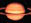

| Mercurio | |
 | Venus | |
 | La Tierra | |
 | Marte | |
 | Jupiter | |
|  | Saturno | |
 | Urano | |
 | Neptuno | |
 | Plutón | |
| Deja tu opinión | ||
LA TIERRA: NUESTRO HOGAR
A fines de los años 60, el hombre quebró por primera vez las cadenas que le mantenían prisionero del campo gravitatorio terrestre y se encaminó orgullosamente hacia la luna. Pero el deseo de contemplar lo que estaba dejando a sus espaldas era demasiado intenso, y fue así como encuadró con las máquinas fotográficas y de televisión una esfera blanca y azul, que se volvía progresivamente más pequeña y lejana, encuadrada en el negro profundo del espacio.
Con frecuencia, el hecho de contemplar un objeto familiar desde una perspectiva novedosa hace que descubramos en él aspectos insospechados. Lo mismo sucedió en esta ocasión. La pequeña Tierra blanquiazulada, suspendida en el vacío, ingresó para siempre en la memoria y en la conciencia colectiva de todos nosotros, tripulantes de una astronave mucho más grande que las artificiales, pero pavorosamente pequeña y aparentemente frágil en la inmensidad del cosmos.
Se difundió entonces un interés sin precedentes por los problemas ambientales, paralelamente a la convicción de que la Tierra debía estudiarse como un sistema global, y no como una simple colección de subsistemas separados entre sí por compartimientos estancos.
Gaya, el nombre con que los griegos bautizaron a la diosa de la Tierra, fue escogido por Lovelock para designar un superorganismo de proporciones planetarias, que comprende la Tierra física y todos los organismos vivos que la pueblan, y que es capaz de autorregularse y de manifestar muchas de las características propias de un ser vivo.
Según Lovelock, la atmósfera, los océanos, el clima y la corteza terrestre están influidos, regulados y mantenidos, en un estado adecuado para la vida, por la acción misma de los organismos vivos. Así pues, estos últimos no serían simples pasajeros, obligados a adaptarse con grandes esfuerzos a condiciones ambientales cambiantes y la mayoría de las veces hostiles, sino que habrían sido, desde su aparición hace más de 3500 millones de años, protagonistas de la evolución planetaria, capaces de modificar la composición atmosférica, el clima, la salinidad de los océanos, el ciclo del agua y de las sustancias nutritivas y, tal vez incluso, la evolución geológica.
Son muchos los científicos que no comparten la hipótesis Gaya, pero en los años transcurridos esta idea ha sugerido nuevas respuestas a algunos hechos inexplicados, ha previsto observaciones inesperadas y, en general, ha atraído la atención sobre la importancia de la geofisiología: el estudio interdisciplinario y global de la Tierra.